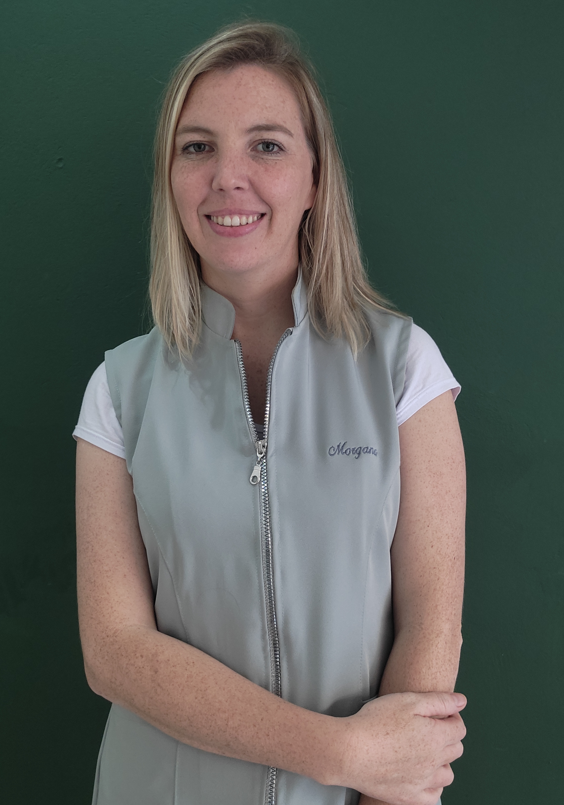
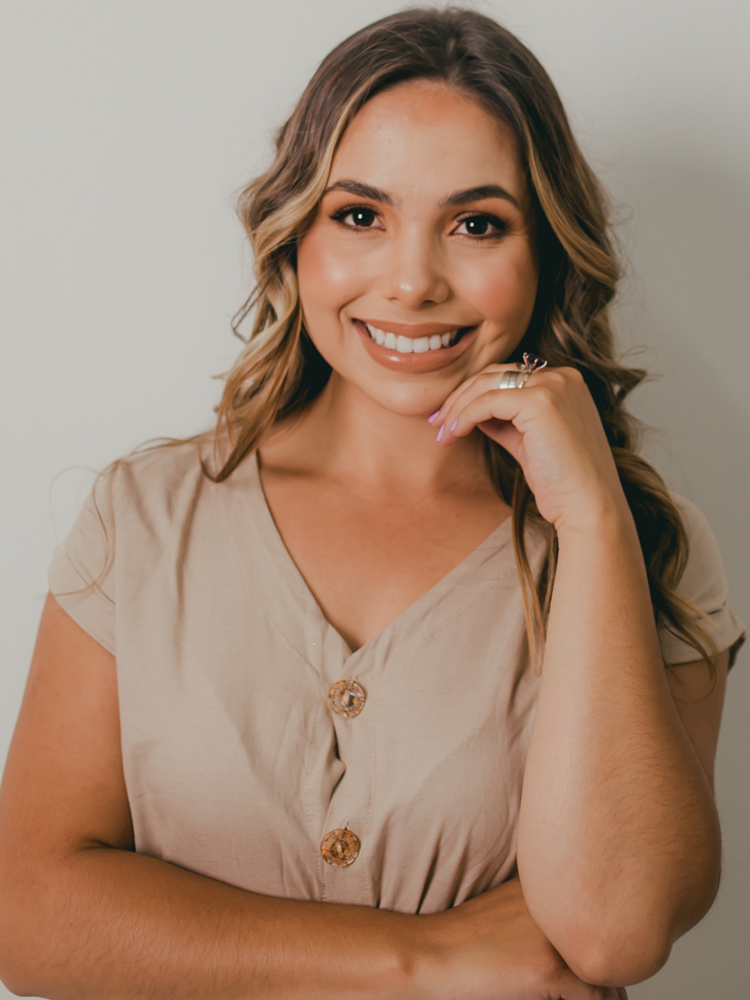
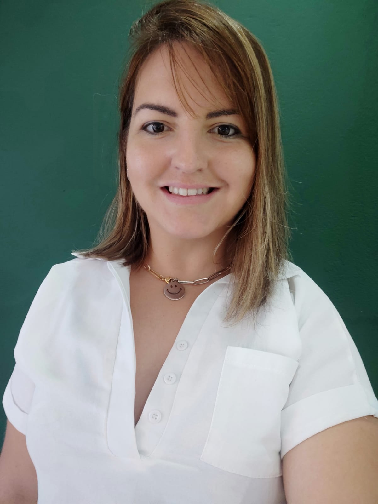
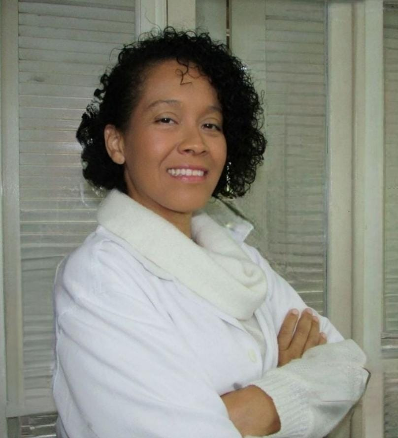

<section class="about-container">
  <div>
    <h2 class="about-title title1" id="about">Quem somos?</h2>
    <div class="about-summary">
      <main>
        Spaço7 é um estabelecimento que oferece uma variedade de serviços de
        bem-estar e cuidados pessoais. Entre os principais serviços oferecidos
        estão massagem, depilação, naturopatia e terapia capilar integrativa.
      </main>
      <p>
        As massagens no Spaço7 são projetadas para aliviar o estresse, relaxar
        os músculos e promover o equilíbrio emocional. A depilação é um serviço
        disponível para remoção de pelos indesejados. A naturopatia é um campo
        da medicina alternativa que se concentra no uso de tratamentos naturais
        e abordagens holísticas para promover a saúde e o bem-estar. A terapia
        capilar integrativa é um serviço especializado que visa melhorar a saúde
        e a aparência do couro cabeludo e cabelo.
      </p>
      <p>
        No Spaço7, os clientes podem desfrutar de um ambiente acolhedor e
        relaxante, onde profissionais dedicados estão prontos para fornecer
        serviços de qualidade e atendimento personalizado. O estabelecimento
        busca promover o bem-estar e a satisfação dos clientes, ajudando-os a
        alcançar um equilíbrio físico e mental.
      </p>
    </div>

    <h2 class="about-title">Conheça nossos profissionais</h2>
    <div class="about-summary">
      <p>
        O Spaço7 orgulha-se de contar com uma equipe de especialistas altamente
        qualificados e dedicados, prontos para oferecer atendimento excepcional.
        Conheça agora os profissionais que fazem do nosso estabelecimento um
        lugar de excelência em serviços de bem-estar e cuidados pessoais.
      </p>
    </div>

    <div class="professional-container">
      <div class="professional-presentation">
        
        <div>
          <h3>MORGANA</h3>
          <p>
            Morgana Gonzalez é uma massoterapeuta empreendedora com mais de 10
            anos de experiência. Ela inaugurou o SPAço 7 em 2022, com uma equipe
            de profissionais qualificados. Morgana oferece tratamentos
            personalizados e busca sempre acompanhar as tendências do setor.
            Agende uma sessão no SPAÇO7 para desfrutar de momentos relaxantes e
            revitalizantes com essa profissional dedicada.
          </p>
        </div>
      </div>

      <div class="professional-presentation">
        
        <div>
          <h3>FRANCIELE</h3>
          <p>
            Franciele Souza de Oliveira é uma profissional especializada em
            estética e cosmética, com foco em design de sobrancelhas e
            micropigmentação. Ela oferece diversos serviços, como design de
            sobrancelhas, design com henna, brown lamination, hidraglos,
            extensão de cílios, limpeza de pele e micropigmentação de
            sobrancelhas e lábios. Franciele se dedica a proporcionar resultados
            personalizados e de alta qualidade, realçando a beleza de seus
            clientes e aumentando sua autoestima.
          </p>
        </div>
      </div>

      <div class="professional-presentation">
        
        <div>
          <h3>EVELYN</h3>
          <p>
            Evelyn é uma recepcionista dedicada e profissional, responsável por
            gerenciar chamadas telefônicas, agendar compromissos e garantir um
            atendimento eficiente aos clientes. Ela desempenha um papel
            fundamental em garantir que as necessidades dos clientes sejam
            atendidas de forma suave e eficaz, contribuindo para o bom
            funcionamento das operações de recepção.
          </p>
        </div>
      </div>

      <div class="professional-presentation">
        
        <div>
          <h3>CARINE</h3>
          <p>
            Carine Westphal é uma terapeuta naturopata clínica funcional e
            fitoterapeuta com mais de 20 anos de experiência na área de saúde.
            Ela utiliza abordagens naturais para tratar uma variedade de
            doenças, abrangendo diferentes sistemas do corpo. Carine oferece
            tratamentos como crioterapia, argiloterapia e emplastros. Sua
            expertise e dedicação garantem cuidados de saúde personalizados e
            eficazes.
          </p>
        </div>
      </div>

      <div class="professional-presentation">
        
        <div>
          <h3>LIANE</h3>
          <p>
            Liane Schonardie é uma podóloga especializada tratamentos para
            cuidar da saúde dos pés. Com mais de conhecimento e experiência, ela
            oferece serviços como profilaxia, tratamento de verrugas e
            onicomicose, coleta para exame micológico, fototerapia, terapia
            ILIB, tratamento para unha encravada, pelling químico, tratamento
            para fissuras plantares, órteses corretivas e cuidados para calos e
            calosidades. Liane dedica-se a proporcionar cuidados personalizados
            e de qualidade para manter os pés saudáveis e prevenir complicações.
          </p>
        </div>
      </div>

      <div class="professional-presentation">
        
        <div>
          <h3>DEISE</h3>
          <p>
            Deise Silveira Fontoura é uma profissional especializada em
            massagem, oferecendo serviços de massagem relaxante, drenagem
            linfática, massagem estética e massagem terapêutica. Com sua
            habilidade e conhecimento, ela busca proporcionar bem-estar, alívio
            do estresse, melhora da circulação, tratamento estético e
            terapêutico através das técnicas de massagem. Sua dedicação em
            cuidar dos clientes e oferecer resultados satisfatórios torna-a uma
            escolha confiável para quem busca relaxamento e cuidados
            personalizados.
          </p>
        </div>
      </div>

      <div class="professional-presentation">
        
        <div>
          <h3>KAISY</h3>
          <p>
            Kaisy Leopoldes é uma terapeuta integrativa e especialista em saúde
            capilar, com mais de 10 anos de experiência como cabeleireira. Ela
            se especializou em terapia capilar integrativa para tratar as
            verdadeiras causas dos problemas capilares, e também possui
            conhecimentos em técnicas como Barras de Access e Constelação
            Sistêmica Familiar. Kaisy é reconhecida por seus cortes, tratamentos
            e mechas, e seu foco está em abordar os aspectos emocionais e
            energéticos relacionados aos problemas capilares, oferecendo
            tratamentos personalizados e holísticos para seus clientes.
          </p>
        </div>
      </div>
    </div>
    <div class="img-logo">
      
    </div>
  </div>
</section>
